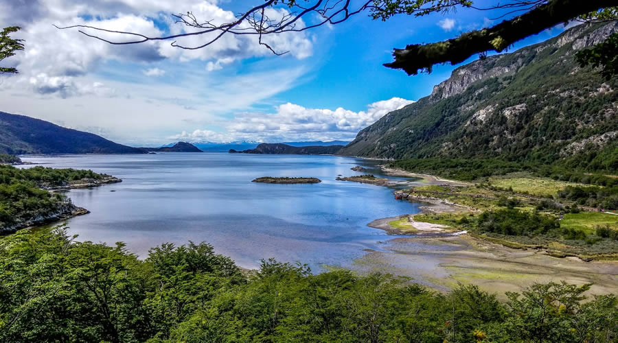

stories
У тектонічному плані архіпелаг Вогняна Земля лежить на трансформному розломі
Південно-Американської літосферної плити і плити Скоша,
які на заході зустрічаються з Антарктичною, що субдукує під них.
Архіпелаг — зона землетрусів магнітудою 7,8-8,5 балів
(центри знаходяться не глибше 50 км) і активного сучасного гороутворення.
Архіпелаг геологічно відноситься до молодої неозойської складчастості.
На південному заході йдуть сучасні процеси гороутворення — виходи крейдових
і третинних гранітоїдів.
Центральна і східна частина зайняті неозойською
складчастістю Анд. Північна частина перекрита чохлом неоген-четвертинних відкладень.
З південного заходу на північний схід кислі й середні магматичні породи мезозою
змінюються осадовими гірськими породами крейдового періоду.
Далі на схід рівнини до атлантичного узбережжя складають еоцен-олігоценові породи, здебільшого перекриті
четвертинними відкладами.
На півночі — неогенові континентальні відклади.
У четвертинному періоді уся територія архіпелагу зазнала патагонського льодовикового
зледеніння. На островах збереглися сучасні льодовики.
У горах колювіальні, льодовикові й соліфлюкційні четвертинні відкладення.
На північно-східних рівнинах —
акумулятивні льодовиково-озерні відклади.
Корисні копалини
